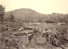
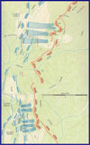

Report of Col. Thomas E. Rose
in camp near Atlanta, Ga

Kenesaw Mountain, from
The Landscapes of the Civil War

from the
Civil War Battle Atlas
l">Physical description from Sgt. John Obreiter's
History of the Regiment